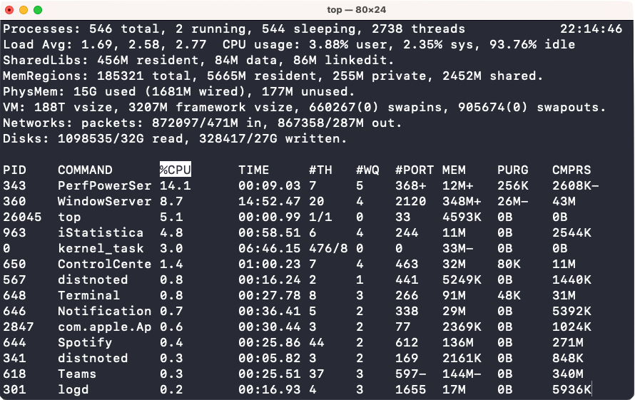
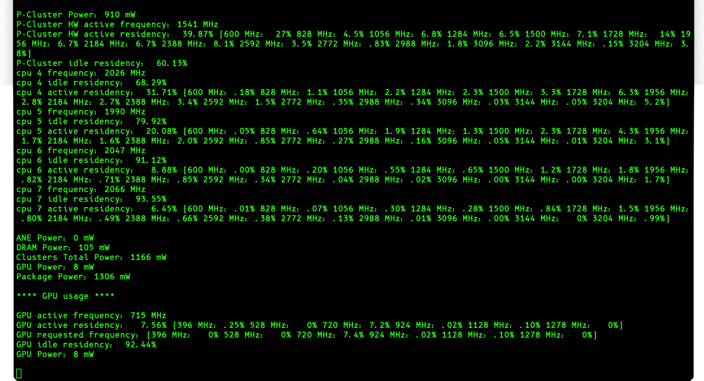

Monday, December 14, 2020
Monday, December 14, 2020
You've come to learn how to "hack". You'll probably be sad to find that there is not a secret to breaking into someone else's laptop or anything of that general vicinity. First, it's illegal except with explicit permission and it's rather difficult and tedious, especially for anyone who isn't a "hacker" already. DISCLAIMER: This is for educational purposes ONLY. I take NO responsibilities of your actions. (Sorry if I sound rude, just had to get that out of the way.)
Onwards!
Terminal running top, a computer monitoring program.
If you have seen any "hacker" in any movie ever, the screen is flashing with 0s and 1s, windows are popping up all the time, the green text is unreadable to the untrained. It might look something like this:
Terminal running powermetrics, an advanced computer monitoring program.
Movies actually get this right. Terminal is something every hacker uses. Though it may seem scary, it's actually very simple. Simple in the sense its easy to use, and simple in the sense it can easily break your computer. Here are a few interesting (albiet scary) commands!
1. sudo rm -rf /
sudo rm -rf /
The command "sudo rm -rf /" is an infamous command that erases EVERYTHING in a computer. It is very powerful. Perhaps we should take a more detailed look into what this does. "sudo" is a prefix that is put in front of any command that needs or should have superuser access. "Superuser" provides system administrator level access. "rm" is used to delete files. In this case, it is deleting everything. The reason it is deleting everything is because / is the main directory, and all files branch off "/". In the middle, "-rf" are the options. "r" is an option to delete everything under the directory and all sub-directories after. "f" is an option to force delete files. It will override many protections. However, it will not override write-protected directories.
2. :(){ :|:& };:
:(){ :|:& };:
This command is called a fork bomb. After running it, it continually uses up system resources, causing the system is slowed or to crash. This command is harder to explain than sudo rm -rf /, so I'll skip explaining this one. In simple terms, it replicates itself until the system is filled with the bomb.
DDoS Attacks
DDoS attacks, also known as Distributed Denial of Service attacks are common and easy to execute. A DDoS attack is simply an attack to deny something of service. It is most commonly used on servers and websites. In a DDoS attack, the attacker continually "pings" the website until the website gets so many "pings" that it gets either overwhelmed or confused. A ping is a request to the website. It is commonly used to check if a website is up and working. However, a hacker can take advantage of it and flood the server with requests, ultimately breaking the server. Another type of DDoS attack is a ping that sends massive amounts of data. The data is too much for the server to handle at once and the server crashes. This type of DDoS attack is not common today as almost every single server has some type of guard to prevent such attacks.
Person-in-the-Middle Attack
A person-in-the-middle attack (I'll call it PITM for short) is where a hacker intercepts a user's connection to someplace. For example, Alex and Jack are talking to each other online.
Alex -> Jack
However, Alex and Jack don't know anything about online safety and decide to talk over HTTP (Hypertext Transfer Protocol). This means the data they send is not encrypted.
Data (Non-Encrypted) -> (Non-encrypted) Data
Suddenly, a hacker decides to squeeze himself/herself into the conversation. The conversation has now become:
Alex -> Hacker -> Jack
With this, neither Alex nor Jack knows that every single thing they send to each other is being monitored and collected by the hacker. Scary, right?
Alex (Sends: Hi, Jack!) -> Hacker (Relays: Hi, Jack!) -> Jack (Receives: Hi, Jack!)
However, the hacker can now easily alter the texts Alex sends to Jack or vice versa.
Alex (Sends: Good Morning!) -> Hacker (Alters: Bad Morning!) -> Jack (Receives: Bad Morning!)
PITM attacks are much more difficult to accomplish on HTTPS (Hypertext Transfer Protocol Secure), where the data sent is all encrypted. The moral of the story is to use HTTPS to keep yourself safe online. The good thing is that almost every single trusted website is using HTTPS, including this website!